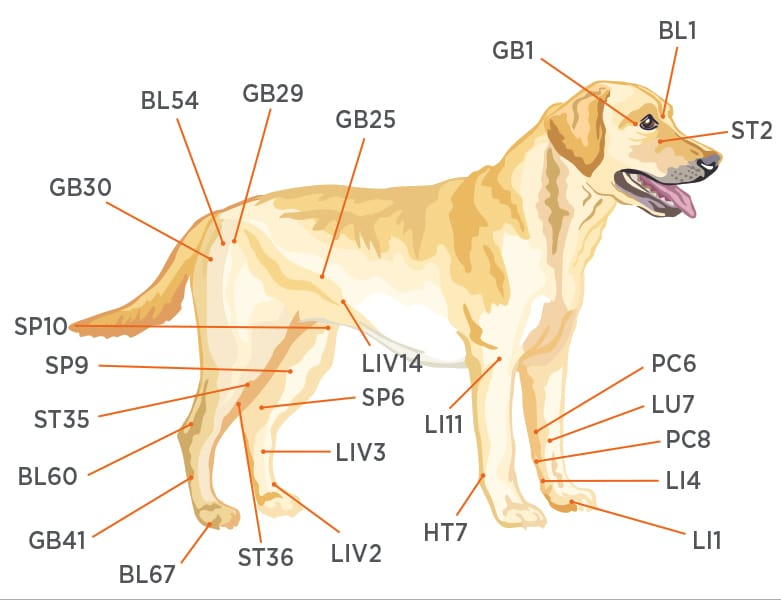

Acupuncture is the use of tiny needles, placed at various locations, to alleviate pain and help the animals organs function more efficiently. Many people (although not animals) have a learned aversion to medicinal needles, which are rigid and relatively large gauge. Acupuncture needles are extremely thin and flexible and therefore relatively painless and well tolerated by nearly all our patients. The needles bring about a calming and comforting effect, and many animals look forward to their treatments. Acupuncture in the U.S. is mostly known for treating musculoskeletal disorders such as hip dysphasia, arthritis, sprains, and back problems. However, acupuncture can be used to treat a variety of problems such as metabolic disorders (diabetes), hormonal imbalances (hypo or hyper-thyroidism), immunologic suppression (feline leukemia and aids), respiratory disease (colds or pneumonia), gastrointestinal upset (vomiting and diarrhea) and some neurologic disorders (seizures). Treatments are initially given weekly, and can usually be decreased to every 2-4 weeks once the animal’s condition improves.
Acupuncture for Pain Management Diagram
Here are some Web sites we thought you might like.
Thank you so much for taking the time to come and visit ours. We hope to hear from you soon.
American Veterinary Medical Association (AVMA)
The AVMA Network provides comprehensive information on pet care, animal health, veterinary medicine, and careers in veterinary medicine for veterinary...visit website
The Humane Society of the United States
Includes descriptions of public-awareness campaigns, programs, legislation, activist alerts, and educational publications...visit website
ASPCA
American Society for the Prevention of Cruelty to Animals...visit website